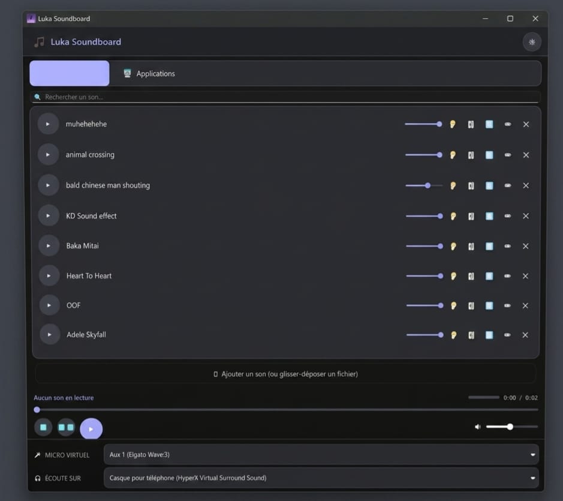
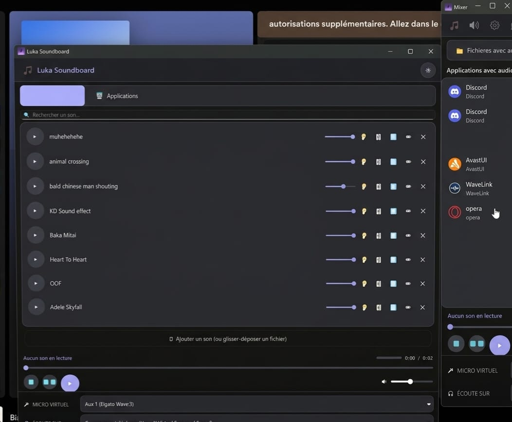
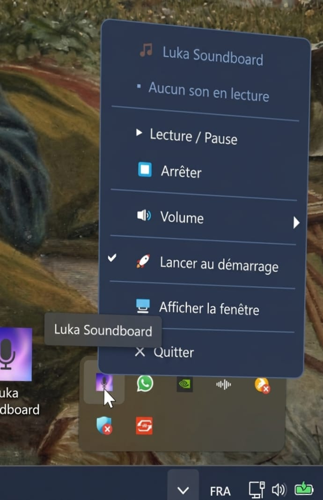

Une application Windows puissante et intuitive conçue pour les streamers et les utilisateurs exigeants. Ajoutez vos propres sons, gérez-les via une interface moderne et routez l'audio de n'importe quelle application directement vers votre sortie micro.
Ajoutez, nommez et organisez vos fichiers audio préférés dans une bibliothèque accessible instantanément.
Envoyez n'importe quel son directement dans votre flux micro (Discord, Teams, Jeux) en un clic.
Capturez le son d'une application spécifique (Spotify, YouTube, etc.) et diffusez-le dans votre micro.
Contrôlez les volumes individuels et globaux pour un rendu sonore professionnel et équilibré.
Basculez entre le mode sombre élégant et le mode clair selon vos préférences et votre environnement.
Optimisé en C++ pour une latence minimale et une consommation de ressources processeur extrêmement faible.


